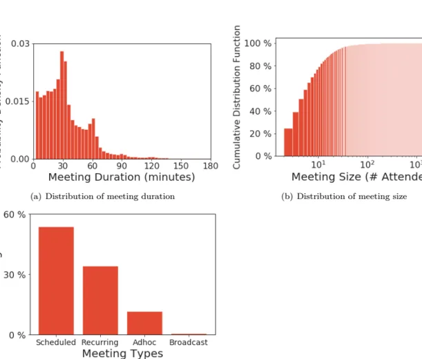

<div id="workplace-ai-map" class="workplace-ai-map">
  <style>
    #workplace-ai-map {
      color: var(--foreground);
      display: grid;
      gap: 1rem;
      width: 100%;
    }

    #workplace-ai-map .module-strip {
      display: grid;
      gap: 0.75rem;
      grid-template-columns: repeat(3, minmax(0, 1fr));
    }

    #workplace-ai-map .module {
      border: 1px solid var(--border);
      border-radius: var(--radius);
      padding: 0.75rem;
      background: color-mix(in srgb, var(--card) 88%, var(--accent));
    }

    #workplace-ai-map .module strong,
    #workplace-ai-map .focus-label,
    #workplace-ai-map .caption strong {
      font-weight: 500;
    }

    #workplace-ai-map .module span,
    #workplace-ai-map .caption,
    #workplace-ai-map .focus-note {
      color: var(--muted-foreground);
    }

    #workplace-ai-map .module span {
      display: block;
      margin-top: 0.25rem;
    }

    #workplace-ai-map .focus {
      display: grid;
      gap: 0.9rem;
      grid-template-columns: minmax(0, 0.9fr) minmax(0, 1.3fr);
      align-items: start;
    }

    #workplace-ai-map .tabs {
      display: grid;
      gap: 0.5rem;
    }

    #workplace-ai-map .paper-viz-tab {
      justify-content: flex-start;
      text-align: left;
      width: 100%;
    }

    #workplace-ai-map .figure-wrap {
      display: grid;
      gap: 0.55rem;
    }

    #workplace-ai-map img {
      border: 1px solid var(--border);
      border-radius: var(--radius);
      max-width: 100%;
      width: 100%;
      background: var(--card);
    }

    #workplace-ai-map .caption {
      margin: 0;
    }

    @media (max-width: 680px) {
      #workplace-ai-map .module-strip,
      #workplace-ai-map .focus {
        grid-template-columns: 1fr;
      }
    }
  </style>

  <div class="module-strip" aria-label="three research modules">
    <div class="module">
      <strong>1. 先观察真实行为</strong>
      <span>用会议、邮件、文件编辑数据看人们怎么工作。</span>
    </div>
    <div class="module">
      <strong>2. 再用 AI 建模</strong>
      <span>从团队聊天里预测团队能不能继续合作。</span>
    </div>
    <div class="module">
      <strong>3. 最后设计新工具</strong>
      <span>做一个 AI 反馈系统，并和真人评审比较。</span>
    </div>
  </div>

  <div class="focus">
    <div class="tabs" aria-label="paper figure selector">
      <button class="btn btn-secondary paper-viz-tab" type="button" aria-pressed="true" data-figure="meeting-distribution">
        <span class="focus-label">会议长什么样</span><br>
        <span class="focus-note">30/60 分钟会议最常见，很多会议是预定或重复会议。</span>
      </button>
      <button class="btn btn-secondary paper-viz-tab" type="button" aria-pressed="false" data-figure="meeting-multitask">
        <span class="focus-label">什么时候容易一边开会一边做别的</span><br>
        <span class="focus-note">越长、越大、越早上的会议，多任务比例越高。</span>
      </button>
      <button class="btn btn-secondary paper-viz-tab" type="button" aria-pressed="false" data-figure="team-prediction">
        <span class="focus-label">AI 能否预测团队状态</span><br>
        <span class="focus-note">只看聊天中的语言信号，也能较好地区分团队可持续性。</span>
      </button>
      <button class="btn btn-secondary paper-viz-tab" type="button" aria-pressed="false" data-figure="ai-feedback-flow">
        <span class="focus-label">AI 反馈系统怎么工作</span><br>
        <span class="focus-note">PDF 论文被解析成文本，GPT-4 生成结构化反馈，再和真人反馈比较。</span>
      </button>
      <button class="btn btn-secondary paper-viz-tab" type="button" aria-pressed="false" data-figure="ai-feedback-results">
        <span class="focus-label">AI 反馈是不是泛泛而谈</span><br>
        <span class="focus-note">打乱论文后重合率大幅下降，说明反馈和具体论文有关。</span>
      </button>
    </div>

    <div class="figure-wrap" aria-live="polite">
      
      <p class="caption" id="workplace-ai-map-caption"><strong>图 2.1:</strong> 这张图告诉我们，研究不是先猜测人怎么工作，而是先看大量真实工作数据的形状。</p>
    </div>
  </div>

  <script>
    (() => {
      const root = document.getElementById("workplace-ai-map");
      const image = document.getElementById("workplace-ai-map-img");
      const caption = document.getElementById("workplace-ai-map-caption");
      const figures = {
        "meeting-distribution": {
          src: "assets/meeting-distribution.webp",
          alt: "论文图 2.1，虚拟会议时长、会议人数和会议类型分布",
          caption: "<strong>图 2.1:</strong> 这张图告诉我们，研究不是先猜测人怎么工作，而是先看大量真实工作数据的形状。"
        },
        "meeting-multitask": {
          src: "assets/meeting-multitask.webp",
          alt: "论文图 2.4，会议特征和邮件多任务比例的关系",
          caption: "<strong>图 2.4:</strong> 长会议、大会议、固定会议更容易让人分心去处理邮件。"
        },
        "team-prediction": {
          src: "assets/team-prediction.webp",
          alt: "论文图 3.3，团队可持续性预测模型表现",
          caption: "<strong>图 3.3:</strong> AI 不是读心，而是从语言、互动模式等线索中估计团队有没有继续合作的可能。"
        },
        "ai-feedback-flow": {
          src: "assets/ai-feedback-flow.webp",
          alt: "论文图 4.1，LLM 科学反馈系统流程",
          caption: "<strong>图 4.1:</strong> 这套系统把论文 PDF 转成提示词，让 GPT-4 给反馈，再用真实评审和用户研究检验它。"
        },
        "ai-feedback-results": {
          src: "assets/ai-feedback-results.webp",
          alt: "论文图 4.2，LLM 反馈和真人反馈重合度分析",
          caption: "<strong>图 4.2:</strong> AI 反馈和真人反馈有明显重合；如果把论文打乱，重合率会掉很多。"
        }
      };

      root.querySelectorAll(".paper-viz-tab").forEach((button) => {
        button.addEventListener("click", () => {
          const next = figures[button.dataset.figure];
          if (!next) return;
          root.querySelectorAll(".paper-viz-tab").forEach((item) => item.setAttribute("aria-pressed", "false"));
          button.setAttribute("aria-pressed", "true");
          image.src = next.src;
          image.alt = next.alt;
          caption.innerHTML = next.caption;
        });
      });
    })();
  </script>
</div>
